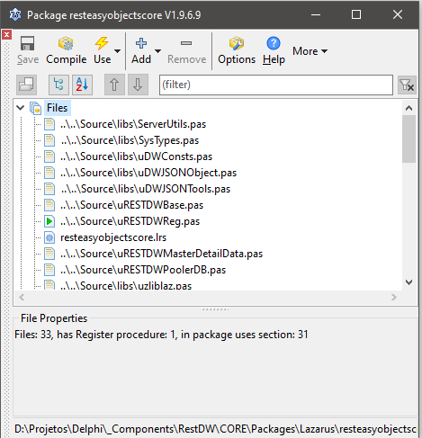

Passos para a Instalação dos componentes do REST DataWare no Delphi 10.x:
- Baixe os arquivos do REST DataWare em uma pasta qualquer do seu sistema através do SVN: Link SVN
- Abra sua IDE, vá no menu Tools > Options.
- Na próxima tela, navegue até Language > Delphi > Library
- Nesse próximo passo, você precisa repeti-lo para todas as plataformas em que for utilizar os componentes RDW, mas é bem simples. Vamos fazer um exemplo com a plataforma Windows 32-bit:
- Clique no local indicado pela seta e navegue através do ícone da pasta amarela até os seguintes diretórios dentro da pasta onde você baixou os arquivos do REST DataWare e adicione ao projeto pelo botão Add:
- CORE\Source
- CORE\Source\Connectors\FireDAC
- CORE\Source\Connectors\RDWDriver
- CORE\Source\DmDados
- CORE\Source\MemDataSet
- CORE\Source\DCP
- CORE\Source\DCP\Hashes
- CORE\Source\DCP\Ciphers
- CORE\Source\libs
- CORE\Source\libs\JSON
- CORE\Source\libs\Synopse
- CORE\Source\libs\Synopse\static
- Feito isso, clique em OK, repita esse passo 5 para todas as plataformas que você for utilizar os componentes REST DataWare, depois clique em Save.
- Reinicie a IDE.
- Abra o projeto de instalação dos componentes localizado na pasta CORE\Packages\Delphi\D24\RestEasyObjectsCV.groupproj
- Ao abrir o projeto, instale na ordem:
- RestDatawareCORE.bpl
- RESTDWDriverFD.bpl
- (Opcional) RESTDWDriverRDW.bpl
- (Opcional, somente se utilizar ZeosLib) RESTDWDriverZEOS.bpl
- (Opcional, somente se utilizar UniGUI) RESTDWDriverUNIDAC.bpl
- Após instalar, a seguinte mensagem irá aparecer na tela, confirmando que tá tudo certo:

- Agora basta fechar tudo, não precisa salvar, reinicie a IDE e você está pronto para utilizar o RDW nas suas aplicações!
Created with the Personal Edition of HelpNDoc: Easy CHM and documentation editor